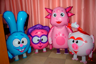
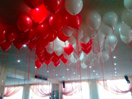
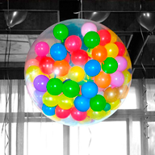
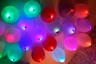

Праздник нужно всегда носить с собой. Что можно сделать со старыми добрыми шариками.
Виды воздушных шаров и особенности
Смотреть на воздушные шары можно бесконечно! Они неизменно вызывают улыбки и поднимают настроение. А
благодаря нашей статье вы начнете разбираться во всем многообразии этой праздничной продукции, узнав
о
достоинствах каждого вида.
Обычные или классические шары круглой формы, знакомые многим поколениям
детишек,
успевшим повзрослеть и
обзавестись собственными чадами. Выпускают их из латекса – особого состава на основе натурального
каучука.
Благодаря современным технологиям, нам доступны различные размеры и широкая цветовая гамма. Даже
самый
требовательный покупатель найдет для себя подходящий оттенок. Оперативно реагируя на модные
тенденции,
производители радуют нас цветами айвори, тиффани, черным, лавандовым. Из таких шариков аэродизайнеры
создают
арки, плетут сложные гирлянды и оригинальные композиции. Эффектно выглядят они и сами по себе -
запущенные
под потолок, собранные в букеты.
Фольгированные или миларовые шары
Фольгированные или миларовые шары – изготовлены путем
сплавления
слоев полиэтилена и нанесения металлизированного напыления по всей поверхности. Они обладают
особой
прочностью и никогда не взрываются. За счет блестящей поверхности, широкому выбору, шары из
фольги
всегда пользуются популярностью. К любому торжественному поводу вы сможете выбрать их в виде
букв,
цифр,
фигурок людей и животных, различных геометрических форм, с изображениями мультгероев и
персонажей
фильмов, поздравительными надписями. Срок полета этих шаров минимум 2 недели и они не требуют
обработки.
Ходячие шары

Ходячие шары (ходячки) – особая разновидность фольгированных
моделей.
Они выполнены в виде большой фигуры популярного героя мультика, супергероя. За счет небольшого
грузика,
расположенного в определенных местах, фигурка движется под дуновением ветерка и «шагает»,
вызывая
восторг окружающих. На открытых площадках, где есть свободный приток воздуха, достигается
наибольший
эффект от такой игрушки.
Гелиевые шары

Гелиевые шары – это любые из перечисленных видов, наполненные
гелием.
За счет летучести вещества, они способны парить под потолком или на открытом воздухе. Из них
получаются
самые фантастические украшения из воздушных шаров. Использовать газ можно в любое время года, но
при
существенном понижении температуры воздуха, нужно проконсультироваться с аэродизайнерами.
Шар с сюрпризом

Шар с сюрпризом – поражает воображение своим внешним видом!
Сфера
с
большим горлышком служит своеобразной упаковкой для подарка. Если вы хотите удивить своим
презентом,
то
упакуйте мягкую игрушку, дорогой парфюм, ювелирные украшения, живые цветы или бутылочку
коллекционного
алкоголя в такой прозрачный воздушный шарик.
Шары линколуны
Линколуны – это модели с двумя хвостиками. С их помощью можно
создать
украшения для любого торжества, которое отмечается в кругу семьи или в масштабах города.
Светящиеся шары

Светящиеся шары (со светодиодами) – это традиционный вариант,
наполненный гелием или воздухом, но с особенной «начинкой». Светодиоды и блок питания
обеспечивают
удивительное свечение, которое поддерживается длительное время и имеет несколько режимов..
Время полета шаров
Длительность полета шаров зависит от Hi-float
Что это такое Hi-float?
Хай-флоат – жидкий пластик. Он обволакивает шар изнутри и не дает
гелию выходить. Обычный гелиевый воздушный шарик начинает сдуваться примерно через 12 ч, потому что
стенки пропускают гелий. А при помощи хай-флоат шары находятся в воздухе до четырех недель! Но,
конечно,
на полет очень сильно влияют внешние факторы, такие как погодные условия, сильный холод или яркие
солнечные лучи и тому подобное. Все наши шары проходят обработку Hi-float поэтому радуют Вас очень
долго!!!